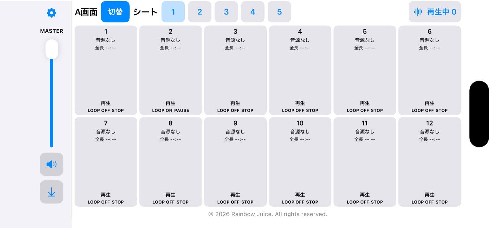
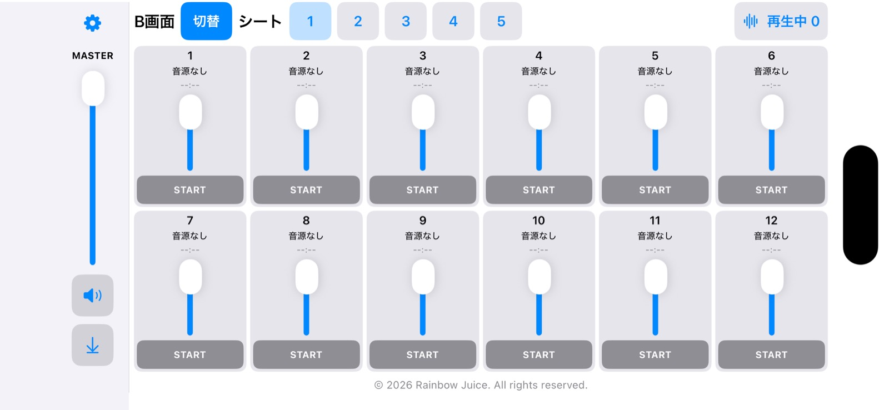

12個の音をすぐ再生
音源を事前に読み込み、スロットから再生します。STOP・PAUSE、ループを音源ごとに設定できます。
Sound player for your moments
iPhone・iPad 対応 / App Storeで公開中式典やイベントで使う音源を、迷わずすぐに再生。大きなボタンと手元の音量調整で、本番の操作をシンプルにします。

Features
1枚のシートに12個の音源を登録。曲名を見てタップするだけで再生できます。再生中でも音量を変えられます。
音源を事前に読み込み、スロットから再生します。STOP・PAUSE、ループを音源ごとに設定できます。
マスター音量に加え、B画面では各スロットの音量を調整。ミュートと5秒フェードアウトにも対応します。
再生中の音を一覧で確認できます。効果音を重ねるスロットも個別に設定でき、全停止は長押し操作です。
Two screens
A画面は本番での再生、B画面は各音源の音量調整に。画面を切り替えても、鳴っている音は続きます。

Getting started
音源はアプリに同梱されていません。ご自身が利用できるMP3・WAV・M4Aファイルを「ファイル」アプリから選んでください。
iPhoneは横向きで使用します。iPadは縦向き・横向きに対応します。
Plans
広告は表示しません。必要なシートが増えたら、アプリ内でLiteへアップグレードできます。
A・B画面、音量調整、ループ、フェードアウトなどを利用できます。
買い切りのApp内課金でシート追加の上限を拡張。必要な枚数だけ「シート管理」から追加できます。
購入すると5枚が自動生成されるわけではありません。Liteの価格はアプリ内の購入画面でご確認ください。シート切替中も、再生中の音は続きます。